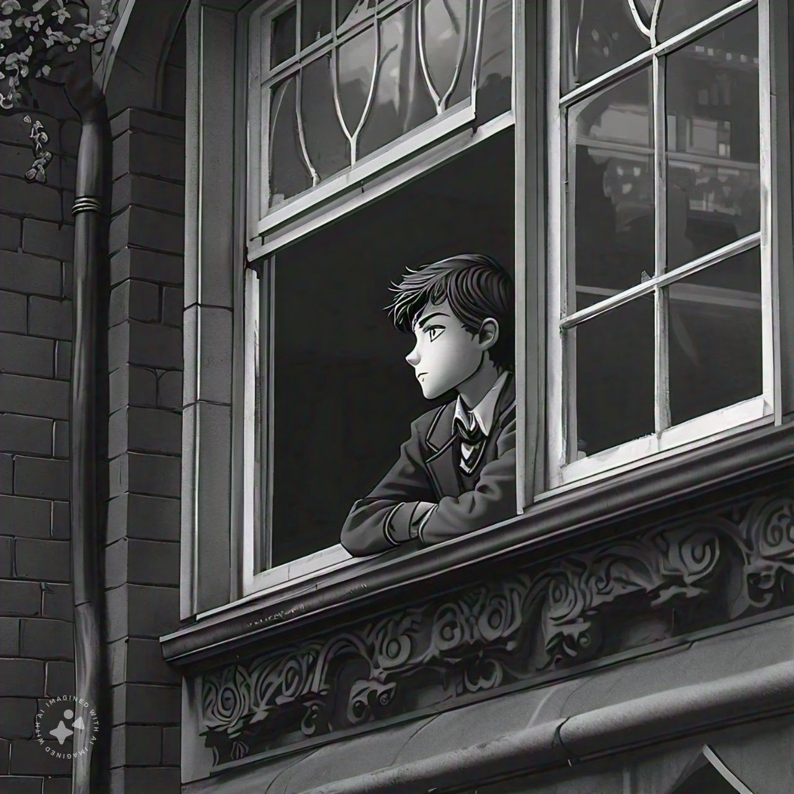

Chapter 1:Factory In The Forest
The factory hummed with a low, mechanical drone, a stark contrast to the silence of the surrounding forest. Workers, clad in bulky protective suits, moved with practiced precision, their faces hidden behind reflective visors. The air inside was thick with the scent of chemicals, and every breath through their masks felt heavy.
outside the factory, the forest loomed-an endless sea of dark, towering tress that seemed to whisper secrets in the wind. The boundary between nature and industry was sharp, almost hostile,as if the cery earth was resistring the intrusion.
Chapter 2:Boy Staring Out The Window
samuel sat by the window, his gaze lost in the gray, overcast sky. The world outside seemed distant, almost unreal, as if it belonged to someone else. His mind drifted back to the day he found out about her—the way she laughed with someone else, the way she looked at that other boy with the same eyes that once promised him forever.

His heart in his chest, a familiar ache that never seemed to fade. How could she betray him like that? And yet, it wasn’t just her. His parents’ harsh words echoed in his mind, every criticism, every disappointed look. To them, he was never enough. Not smart enough, not strong enough, not like his brother—who they loved so much more.
He clenched his fists, nails digging into his palms. The memories of his brother's accident flashed before his eyes, a nightmare he could never escape. His parents blamed him, even if they never said it out loud. He blamed himself too.
The world outside blurred as tears welled up in his eyes, but he quickly wiped them away, swallowing the lump in his throat. Weakness wasn’t allowed here—not in his house, not in his life. But as he stared at the rain streaking down the window, he wondered how much more he could take before everything broke.
These lines aim to deepen the boy’s emotional struggle, highlighting his feelings of betrayal, guilt, and loneliness.
Chapter 3: Discovering the Betrayal
samuel stood frozen in the entrance of the restaurant, his heart sinking as he watched her smile—that. smile—at someone else. They were sitting close, too close, her hand lightly brushing the other boy’s as they talked. It felt like a punch to the gut, knocking the air out of his lungs. He wanted to scream, to demand an explanation, but all he could do was turn and walk away, each step heavier than the last.
Back home, the walls of his room felt like they were closing in on him. He slid down into a corner, his knees pulled up to his chest, and the tears came without warning. He buried his face in his hands, muffling his sobs as he pounded his fist against the cold, unyielding wall. The pain in his knuckles was nothing compared to the ache in his chest. Why wasn’t he good enough? Not for her, not for his parents, not even for his brother.
He could still hear his parents’ voices, their cutting words about his grades, their constant comparisons to his brother—the golden child. And that day, the accident—the accident. The screech of tires, the sickening crunch of metal, and the silence that followed. He had lost him, right before his eyes, and nothing had been the same since.
Chapter 4: Present Time
The past felt like a distant nightmare as. samuel sat across from his best friend, trying to focus on the here and now. The school cafeteria buzzed with the noise of students, but it all felt muted, like background noise in a bad dream. His friend was talking about homework, something about math problems, but samuel could barely concentrate.
He forced a smile, nodding along as he picked at his lunch. This was his only friend, the one person who didn’t judge him, who didn’t expect anything more than what he could give. Their conversations were simple, easy, a brief escape from the chaos inside his head. But even here, in this moment of normalcy, the weight of his past clung to him like a shadow, never letting him forget what he had lost.
These lines aim to provide a seamless emotional transition from the heartbreak and trauma of the past to the present, where he seeks solace in the mundane interactions with his best friend.
Chapter 5: The Factory
The flickering lights cast erratic shadows across the factory floor, where chaos had erupted. Sparks flew from a broken machine, crackling in the air like sinister fireworks. Pools of blood stained the cold, concrete floor, seeping into the cracks and creating a sickening trail that led to something... unspeakable.
A low, grotesque sound filled the space—a wet, slurping noise, as if something was feeding. It was followed by a bone-chilling crunch, the unmistakable sound of something breaking, shattering. The air was thick with the stench of iron and decay, almost suffocating in its intensity.
From the corner of the room, a faint rustling began. Something was moving, dragging itself across the ground with an unnatural, jerky motion. It left behind a dark, oozing trail as it crept closer, its presence more felt than seen, but undeniably real. The factory, once a place of routine and order, had transformed into a scene of horror, and whatever was lurking in the shadows was just beginning its hunt.
These lines aim to build a suspenseful, eerie atmosphere, making the scene feel intense and terrifying.
Chapter 6: samuel’s House
samuel watched as his parents hurried out the door, off to another party, leaving him alone in the house. The moment the door clicked shut, he made his way to his room, eager to escape into the virtual world of his video games. The flashing screen and the rhythmic tapping of buttons were a welcome distraction, a way to drown out the emptiness of the house.
.jpg) Hours passed, and the digital world blurred with reality as sleep began to take over. He finally drifted off, the controller slipping from his grasp as he fell into an uneasy sumber.
Hours passed, and the digital world blurred with reality as sleep began to take over. He finally drifted off, the controller slipping from his grasp as he fell into an uneasy sumber.
When he woke up, the house was eerily silent. The only sound was the faint ticking of a clock in the hallway. Still groggy, he wandered into his parent's room, expecting to find them back from the party, but the bed was untouched, and the room was empty.
A cold knot of unease tightened in his stomach as he called his mom’s phone. It rang, but there was no answer. He tried his dad next, but again, only silence greeted him. A vibration from his own phone startled him. He glanced at the screen—two messages. One from the government and another from his best friend. Without much thought, he ignored the official alert and opened his friend’s message instead: "Come over to my place at 9:00 PM. We can play that new game.
He glanced at the clock—he still had some time. Deciding to shake off the strange feeling that had settled over him, he took a quick shower, dressed, and grabbed a piece of bread. As he tied his shoes, he tried to push away the lingering unease, convincing himself that everything was fine.He headed to the main gate, but when he tried to open it, the gate wouldn’t budge. Frowning, he tried again, pulling harder, but it remained stubbornly shut. Panic began to creep in. He glanced around, feeling the hairs on the back of his neck stand up as if he was being watched. The house, once familiar, now felt like a trap.
Determined not to let his anxiety get the best of him, he decided to use the side gate. But as he made his way there, something in the air felt different, charged with a sense of impending doom.
Chapter 7: Outside The House
After struggling with the gate,.samuel finally managed to use the second door and stepped outside. The cool night air greeted him, but something felt off. As he walked down the path, he noticed the plants and trees in his yard were... different. They seemed to be growing at an unnatural speed, their branches twisting and turning as if alive with intent. The leaves rustled, not with the wind, but with an unsettling energy of their own. He shook his head, trying to dismiss the creeping unease, and continued on his way.
The road to his friend’s house was eerie, almost dreamlike. The trees along the street were acting strange, their branches arching toward the ground like claws, while the grass seemed to be spreading, inch by inch, covering the pavement as if reclaiming the earth. Cars were abandoned in the middle of the road, doors wide open, as if their owners had fled in a hurry. The vehicles were parked haphazardly, some at odd angles, creating a maze of metal and shadows.
As samuel walked, he couldn’t shake the feeling that something was watching him, something hidden within the darkness of the trees. But he forced himself to ignore the growing sense of dread and pressed on, telling himself it was all in his head.
Finally, he could see his friend’s house in the distance, but something was terribly wrong. The house, along with all the neighboring homes, was completely overtaken by vines and thick roots, as if the plants had come alive and swallowed them whole. The once familiar street was now a tangled mass of greenery, and fear clawed at his chest.
Then he saw his friend. She was running toward him, her face pale with terror. She kept glancing over her shoulder, as if something was chasing her.samuel called out to her, shouting her name, but before she could respond, a thick root shot out from the ground, slicing through the air like a whip. It struck her stomach with brutal force, and she collapsed to the ground, lifeless.
The sight was horrifying, but what paralyzed him wasn’t just the shock—it was the memory it triggered. The way his brother had died, the accident replayed in his mind, blending with the present horror. He could see it so clearly now, the blood, the helplessness, the guilt. His breath caught in his throat, his body frozen in place, unable to move, as if the roots had wrapped around him too.
samuel stood there, paralyzed by fear and grief, unable to process what was happening, his mind caught between the past and the terrifying reality unfolding before him. The world around him seemed to spin, the plants growing closer, reaching out, as his vision blurred with tears and terror.
Chapter 8: The Transformation
After a moment of paralyzing fear, [Boy's Name] finally snapped back to reality. His breath came in ragged gasps as he looked down at his friend's lifeless body. But then, to his horror, her body started to twitch. The movement was unnatural, jerky, as if something else was controlling her. Her eyes, once full of life, were now vacant, and from the corners of her eyes, small, dark vines began to creep out, weaving through her skin like veins.
He watched in terror as the vines grew, spreading across her face and down her body, melding with the plant life that had overtaken the neighborhood. Her limbs moved with a stiff, mechanical precision, like a puppet on strings, and her head jerked toward him, her gaze locking onto his with an eerie, unblinking stare.
Before he could react, her mouth opened wide, unnaturally so, and from the depths of her throat, a thick vine shot out, snaking through the air toward him. It wrapped around his left arm with a vice-like grip, the plant’s texture rough and cold against his skin. The vine started pulling him closer, inch by inch, with a strength that belied its size.
Panic surged through him, and he struggled desperately, tugging and twisting to free himself. His heart pounded in his chest as he kicked at the ground, using every ounce of strength to resist the vine's pull. After what felt like an eternity, he managed to break free, the vine snapping back like a recoiling snake.
Stumbling back, samuel looked around in a daze. The street was now filled with people—his neighbors, once ordinary and familiar—now moving like lifeless drones, their bodies partially consumed by the rapidly growing plants. Each of them was connected by a network of roots and vines, all moving in unison, like parts of a larger organism.
It was then that the realization hit him like a cold wave—this wasn’t just an outbreak; it was an invasion, a takeover by something he couldn’t comprehend. The virus, whatever it was, had turned people into mindless slaves, puppets of the plants that now ruled the town.
Without wasting another second, he turned and ran, his mind racing as he searched for a place to hide, a place where he could think, where he could figure out what to do next. The world had changed in the blink of an eye, and survival was now his only goal.
These lines aim to convey the horror and urgency of the situation as the protagonist witnesses the terrifying transformation of his friend and begins to understand the scale of the outbreak.
Chapter 9: The House of Horrors
Samuel stumbled into the house, slamming the door behind him with a loud bang. His chest heaved as he gasped for air, his heart racing like a drum in his ears. Fear gripped him tightly, his whole body trembling uncontrollably, drenched in sweat. What was happening? His mind raced, desperately trying to make sense of the nightmare that had unfolded before his eyes.
He leaned against the door, trying to calm his breath, but the unease only deepened. The house was eerily quiet, the only sound being the frantic thumping of his own heart. He forced himself to move, creeping up the stairs to the second floor, his footsteps barely making a sound on the creaking wood.
As he reached the top, he froze. The hallway was overtaken by massive, writhing roots, their monstrous forms twisting through the walls and floor, like something out of a twisted dream. They seemed alive, pulsating with a dark energy that made his skin crawl. This was no ordinary house—it was a trap, a living nightmare.
Suddenly, a grotesque vine with an eye-like bulge slithered up to the window in front of him. The eye glared at him, filled with a malevolent intelligence. Before he could react, the vine lashed out, aiming straight for him. Panic surged through his veins, and in a desperate move, he spotted a pen lying on a table to his left. He grabbed it without thinking and, with all his might, plunged it into the eye.
The eye burst with a sickening pop, spraying his face with a mix of white fluid and blood. The sensation was revolting, but there was no time to think. The vine recoiled in pain, thrashing wildly as the house seemed to come alive with a chorus of rustling and creaking, as if the very walls were angry.
Samuel didn’t hesitate. He turned and bolted down the stairs, slamming the door behind him as he reached the ground floor. But the noises didn’t stop. He could hear them—creepy, unnatural sounds coming from outside the house, growing louder with each passing second. He had to find a way out, but where could he go? Everywhere he turned, the plants seemed to be waiting for him, hunting him.
This version emphasizes the boy's fear and the horror of his situation, as well as the terrifying nature of the plant monsters. The scene is designed to be intense, making the reader feel the boy's desperation as he tries to survive.
Chapter 10: The Supermarket Massacre
 then the scene shift to a group of some people of boys and girls children and old people are traying to escape from monster plant zombie and from roots also they are goes to supermarket to find suppliment resorces and food then a root comes from the dark side of supermarket and take a child with him and eat him then. the girl transfrom in the plant zombie and try to attcak otheres then her mother got imotinal and try to get her back but when he come daughter, the dughter open her mouth and da root come inside from his mouth and and dirtecly goeds to her mother mouth and infect her too then the father and 2-3 more people come to save him but a big size monster of plant apperas. and eat them all and more monter come and eat there all groups.
then the scene shift to a group of some people of boys and girls children and old people are traying to escape from monster plant zombie and from roots also they are goes to supermarket to find suppliment resorces and food then a root comes from the dark side of supermarket and take a child with him and eat him then. the girl transfrom in the plant zombie and try to attcak otheres then her mother got imotinal and try to get her back but when he come daughter, the dughter open her mouth and da root come inside from his mouth and and dirtecly goeds to her mother mouth and infect her too then the father and 2-3 more people come to save him but a big size monster of plant apperas. and eat them all and more monter come and eat there all groups.
a group of survivors—composed of boys and girls, children and elders—frantically make their way through the desolate streets, desperately seeking refuge from the relentless plant zombies and the ever-encroaching roots. Their faces are etched with fear and exhaustion as they reach the broken doors of a supermarket, hoping to find supplies and food to sustain them.
The air inside is heavy with tension, the once-bustling aisles now shrouded in eerie silence, save for the faint rustling of leaves. Suddenly, from the shadowed depths of the supermarket, a thick root lashes out, wrapping around a young boy. His scream echoes through the aisles as the root drags him into the darkness, where he is devoured in seconds. The group freezes in horror, but there is no time to mourn.
In the chaos, one of the girls in the group begins to convulse, her skin turning a sickly green as her body twists in unnatural ways. Before their eyes, she transforms into one of the plant zombies, her eyes now glowing with an eerie light. Her mother, heartbroken and desperate, rushes forward, pleading for her daughter to remember who she is. But as the mother reaches out, the girl’s mouth opens wide, revealing a writhing mass of roots. In a terrifying instant, a root shoots out from the girl's mouth, burrowing directly into her mother’s mouth, infecting her with the same horrific fate.
The father and a few others, overwhelmed with grief and anger, charge forward in a futile attempt to save them, but before they can reach the mother and daughter, the ground beneath them trembles. A colossal plant monster erupts from the floor, its massive, gnarled roots thrashing wildly. In one swift motion, it devours the father and the others, their screams cut short as more plant monsters emerge from the shadows, surrounding the group.
The survivors' numbers dwindle rapidly as the monsters close in, their hope crushed under the weight of the relentless and nightmarish assault. The supermarket, once a symbol of sustenance and safety, becomes a tomb as the monstrous plants claim every last one of them, leaving only silence in their wake.
Chapter 11: Roots of Darkness
samuel barely sixteen, had managed to evade the plant zombies for now. His heart pounded in his chest as he slipped into the house's underground floor, the only place he hoped might offer some safety. The door creaked open, revealing a dusty, abandoned lab filled with strange chemical bottles and rusted instruments. The air was thick with the smell of decay, and he could see that the walls were covered in thick, pulsing roots that had invaded every inch of the space.
Desperate for any source of information or aid, the boy spotted an old computer on a cluttered desk in the corner. He rushed over, his hands trembling as he tried to power it on. Nothing happened. He cursed under his breath, remembering how the roots had smothered the power plant, leaving the world in darkness.
He began searching the room, knocking over dusty papers and broken equipment, hoping to find something—anything—that could help him understand what had happened or give him a clue on how to survive. That’s when his eyes caught a thick, leather-bound book, its pages yellowed with age. Flipping through it, he saw pages filled with complex chemical equations and diagrams. But his head spun—science had never been his strong suit, and the symbols looked like gibberish.
Frustration growing, he shoved the book aside and continued his search. Then, in a dark corner, he found a small power switch on the wall. Taking a deep breath, he flipped it. The room buzzed to life as a dim lamp in the storeroom flickered on, casting eerie shadows on the walls. The computer hummed and its screen glowed faintly. He rushed back to the desk, his hands moving quickly as he pressed the power button once more. This time, the screen booted up.
Relief washed over him—until the computer asked for a password. Rage boiled within him. "Of course! Just my luck!" he spat, his voice echoing in the small room. He banged his fists on the desk, knocking over a few vials and sending papers flying. "Why does everything have to be so hard?"
In his frustration, he noticed something odd. Scrawled across the walls, on the papers, even etched into the metal of the instruments, was a single phrase repeated over and over: “ET-42.” It looked like a designation, or maybe a project name. The boy’s heart skipped a beat as he stared at it, the repetition gnawing at his mind.
An idea sparked. He rushed back to the computer, his fingers hesitating over the keyboard. Could it really be that simple? He typed "ET-42" into the password field and hit enter. The computer beeped, and the desktop appeared.
He stared in disbelief as the screen filled with files, logs, and video entries. A flood of emotions surged through him—joy, relief, but also a deep-seated fear. What secrets had this lab held? And more importantly, what had been the purpose of Experiment-42?
Ignoring the dread creeping up his spine, the boy began clicking through the files, hoping to uncover something that could help him survive in this new, twisted world.
NOTE:- Working on remaining episode please wait. it will be uploaded soon as possible!
Welcome To Our Website
-Aapka hardik swagat hai hamare website mai-
About the Owner
The owner of this website, Ankit saini, has a passion for story making . With years of experience in story writing. Ankit saini decided to create this platform to tell his story in this website. Their dedication to tell story drives the content and services provided here.
When not working on this website, Ankit Saini enjoys writing story and gaming . They are committed to ensuring that visitors like you have the best experience possible. Feel free to reach out if you have any questions or suggestions!